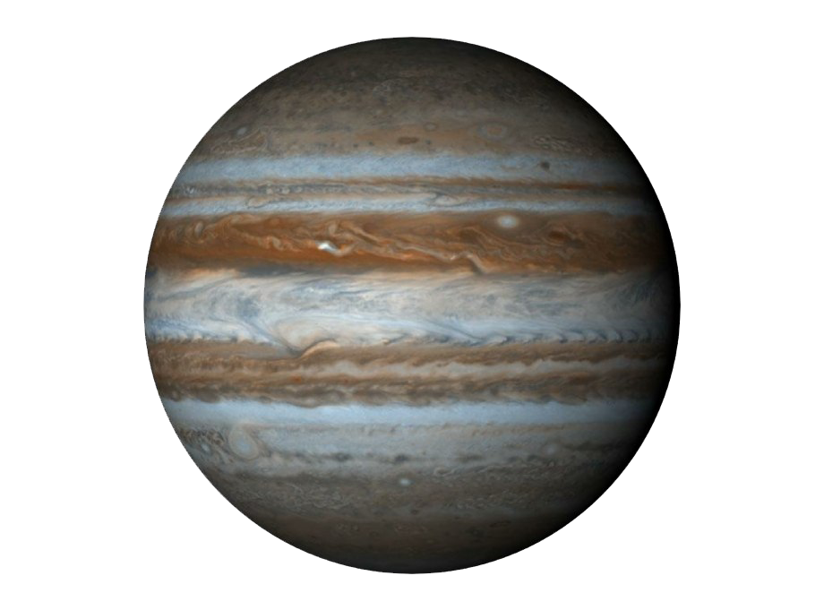

Jupiter is the largest planet in the Solar System and is mostly made of gas. It has a famous "Great Red Spot," a giant storm that has lasted for centuries. Jupiter has at least 95 moons, including the four large Galilean moons.
⬅ Back to Planet Selector